Живые кадры из игры: деревня на карте, снаряжение героя, книга существ, стена доблести, визитка героя и подземелье.
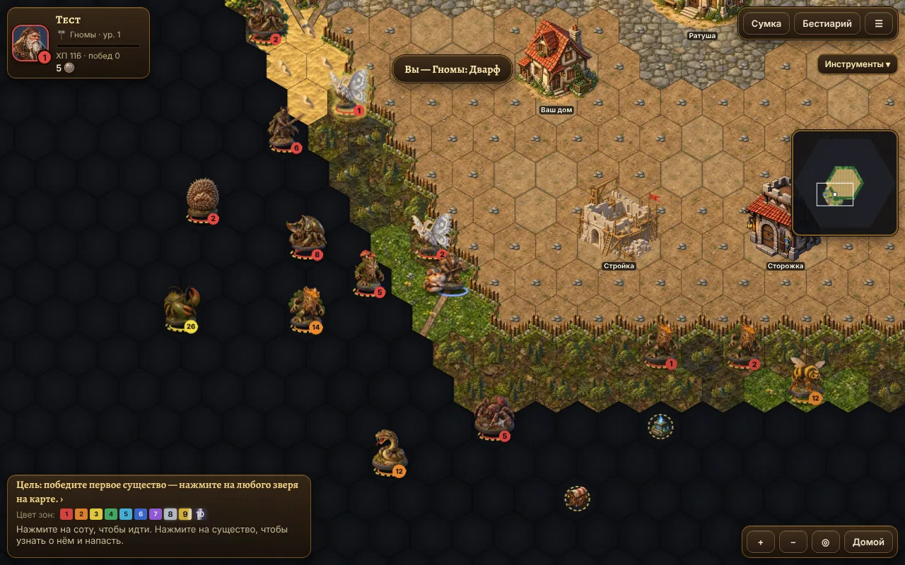
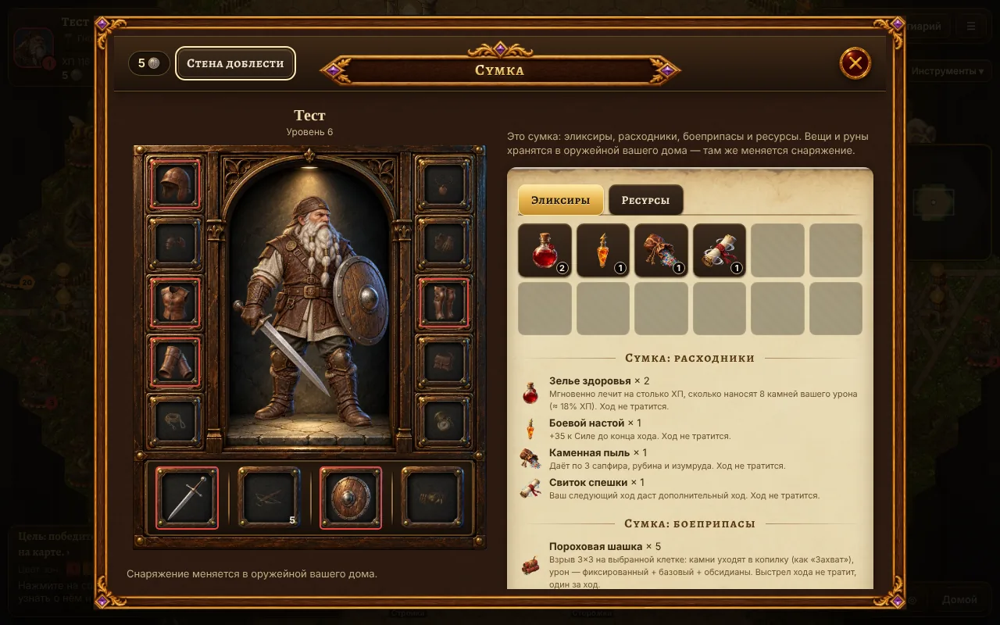
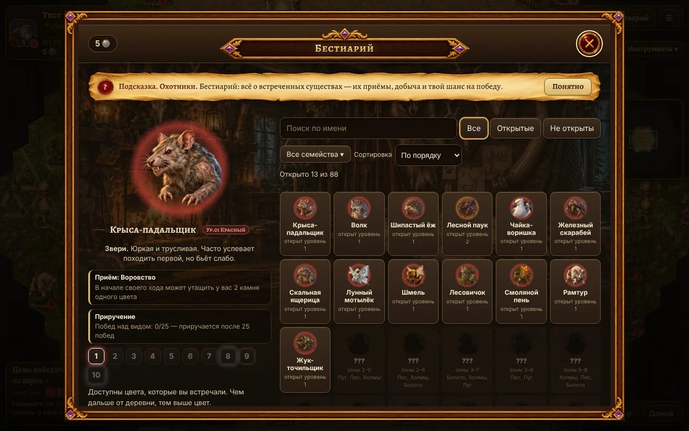
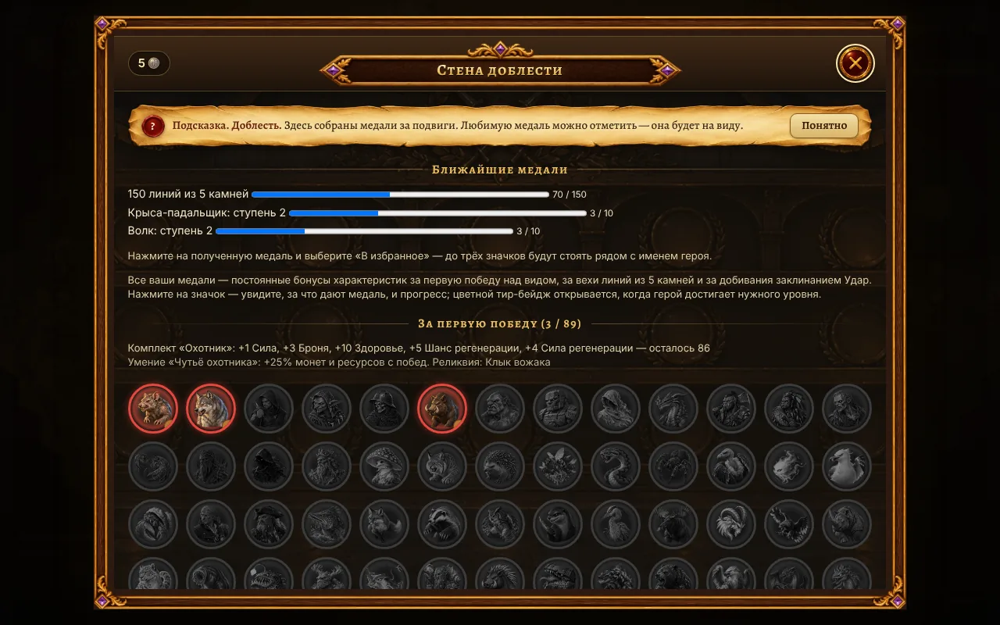
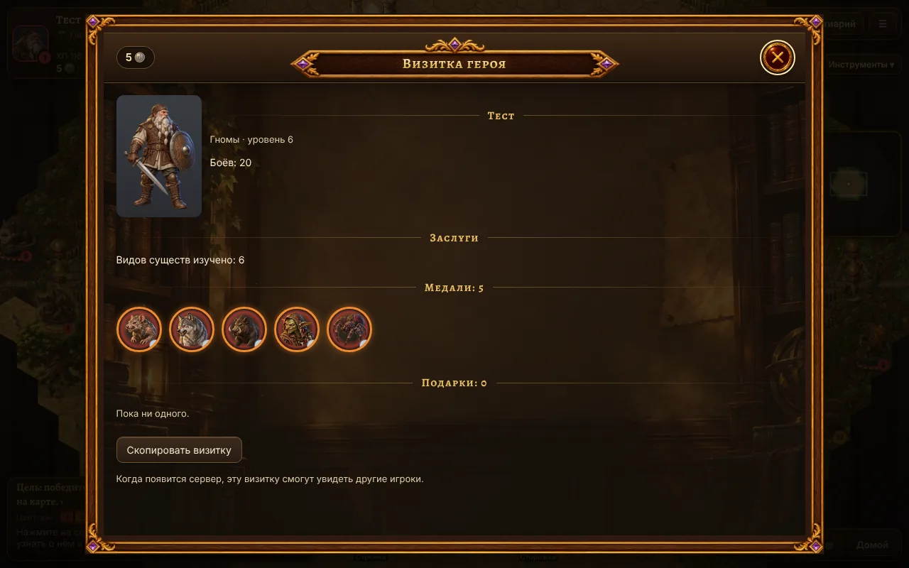
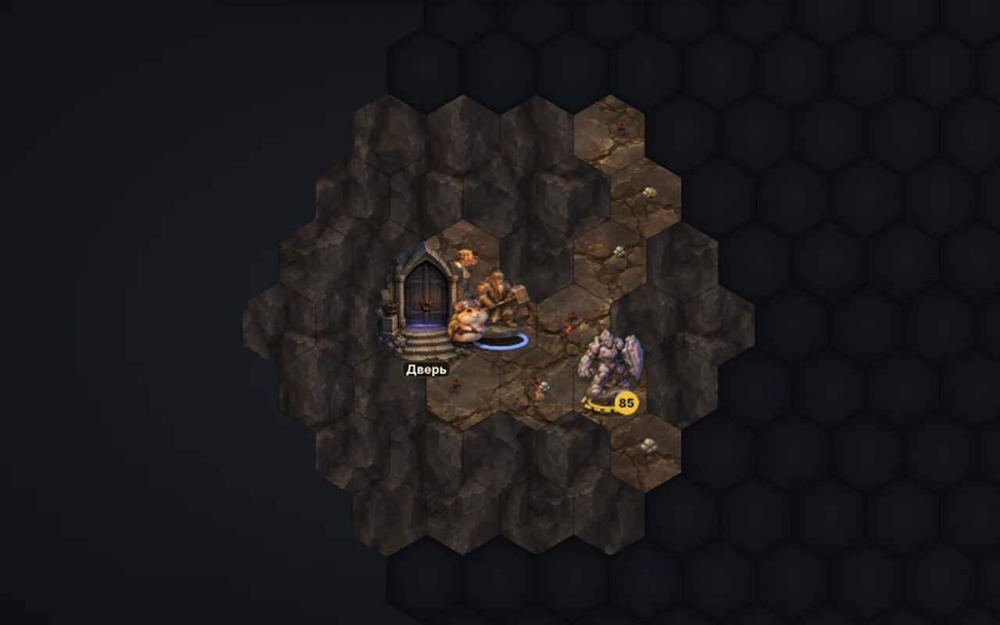
Его осколки хранят стражи с коронами, разбросанные по карте. Собери четыре осколка — и проснётся последний страж. Но до него ещё надо дойти: через туман, болота, горы и побережье.
Поле шесть на шесть, четыре камня и соперник, которым управляет ИИ. Составляй ряды из трёх и больше, обдумывай каждый ход — и не давай существу сделать это раньше тебя. У каждого существа свой уровень от 1 до 100 и цветная точка: серая — слабое, зелёная — ровня, жёлтая — сильное, красная — смертельное.
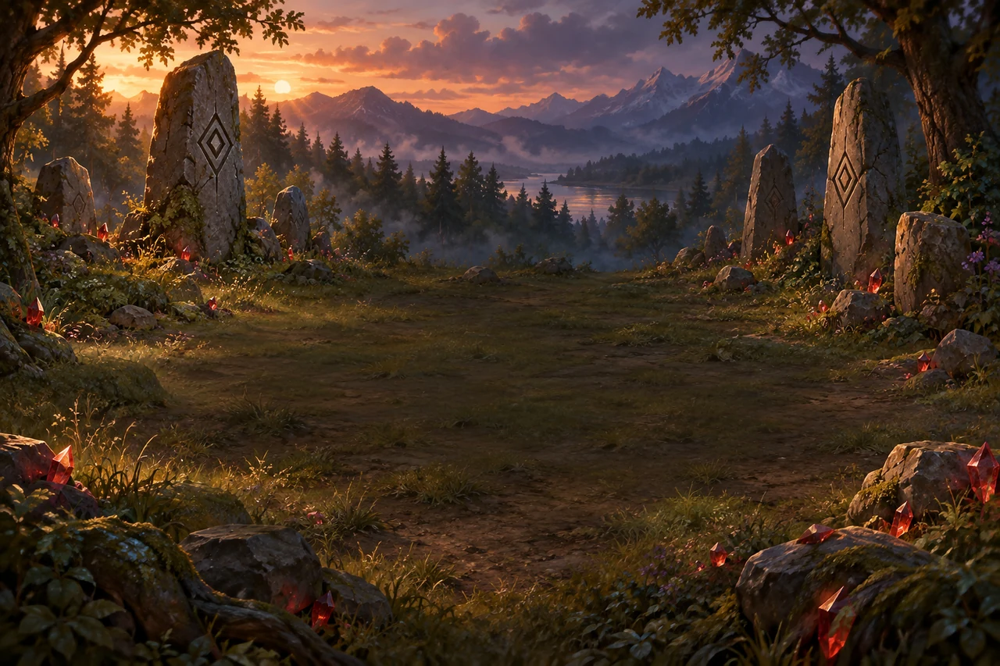
Каменные руны, закат и туман над долиной — вот где решается исход.
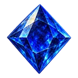
Сапфир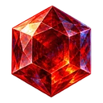
Рубин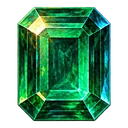
Изумруд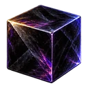
ОбсидианСобирай ряды из камней и используй особое умение своего народа — оно может перевернуть бой за один ход.
В центре поле шесть на шесть с гранёными камнями. Слева твой герой и его магия, справа — противник, его здоровье и приём. Камни с цифрами x3 и x5 бьют сильнее. У каждого участника боя — своя плашка со здоровьем и собранными камнями: у героя, питомца и обоих противников. Питомец дерётся на своём поле, и за него тоже можно сыграть. Перед приёмом существа появляется подпись «готовит…», так что есть время подумать. Бой можно ускорить в меню: режим «быстрый» вдвое сокращает паузы.
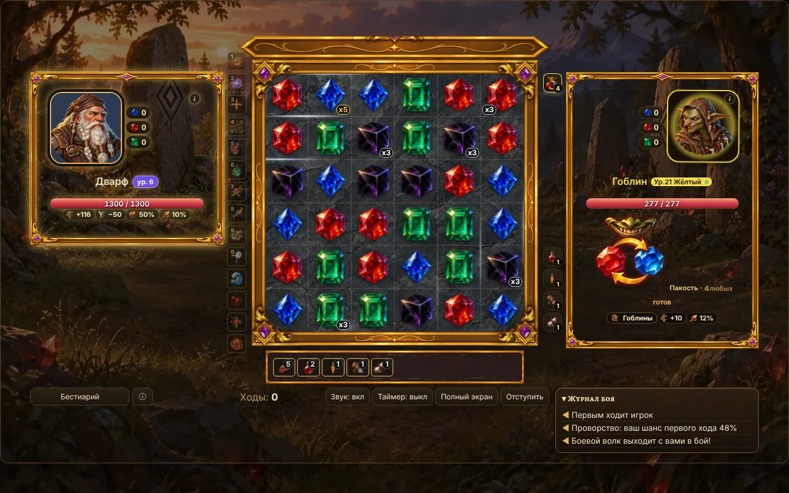
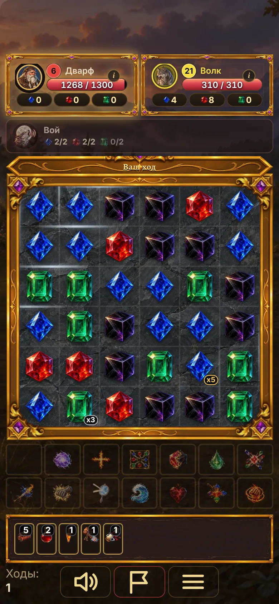
Заклинания открываются по мере роста героя. Одни бьют, другие лечат, третьи переписывают поле боя. К ним добавляется умение народа — вместе четырнадцать кнопок в бою.
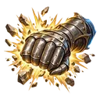
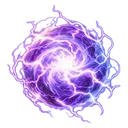
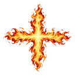
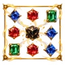
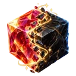
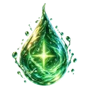
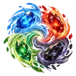
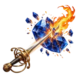
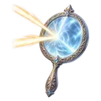
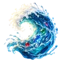
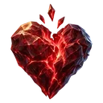
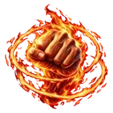
У каждого народа своё умение, а у каждого народа — герой и героиня на выбор. Выбирай того, чья тактика тебе ближе по духу.
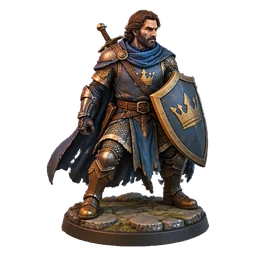
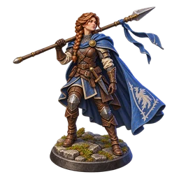
Торговцы и рыцари Вольных городов. Умеют договориться и повести за собой.
На три хода урон героя растёт на 50%. Время ломать оборону.
Родной камень: Сапфиры — заряжает приём.
Лавка дешевле на 10%, монет с добычи на 10% больше.
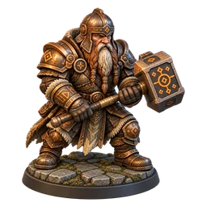
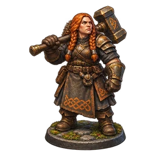
Рунные кузнецы и воины гор. Крепкие, как камень, из которого вырублены их залы.
Три случайных камня на поле становятся обсидианом x3.
Родной камень: Обсидиан — заряжает приём.
Работа кузницы дешевле на 15%.
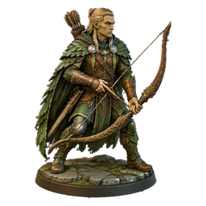
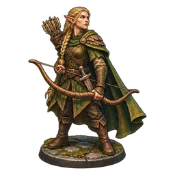
Лучники и друиды древних лесов. Быстры и неуловимы.
Выбранный камень и два соседних прорастают изумрудами x3 (с 10-го уровня — x5), готовые линии собираются сразу.
Родной камень: Изумруды — заряжает приём.
Чаще ходят первыми, удары чаще отлетают обратно.
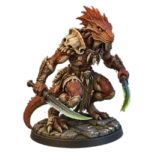
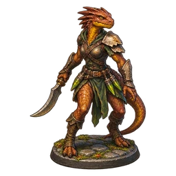
Охотники топей с толстой чешуёй и ядовитыми клинками.
Яд: противник теряет здоровье в начале каждого из трёх своих ходов. Укусы складываются — до трёх слоёв сразу.
Родной камень: Рубины — заряжает приём.
Толстая чешуя: больше здоровья и силы.
Карта из шестиугольников скрыта туманом. Идёшь дальше — открываешь новые земли, встречаешь существ сильнее и получаешь добычу ценнее. Леса, болота, горы и побережье — у каждой местности свои обитатели.
Маяк, на котором живёт смотритель — тюлень. Он знает, где искать ключ.
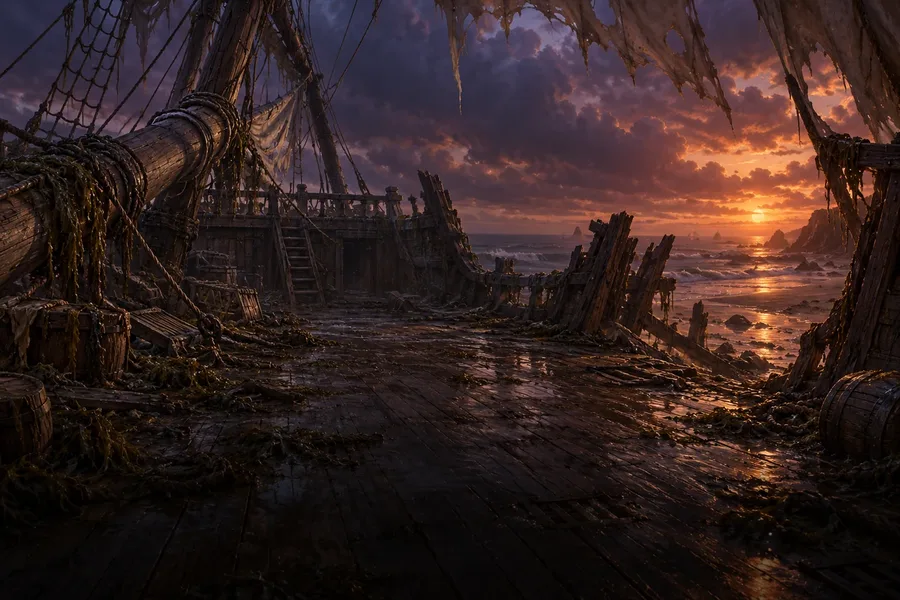
Разбитая бригантина на берегу. Рядом стоит запертый сундук.
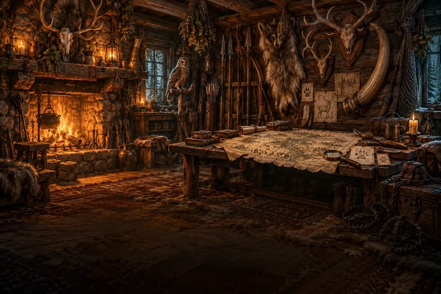
Бестиарий: всё о встреченных существах — приёмы, добыча и шанс на победу.
Помимо большой карты у игры есть отдельные места со своими правилами, существами и наградами.
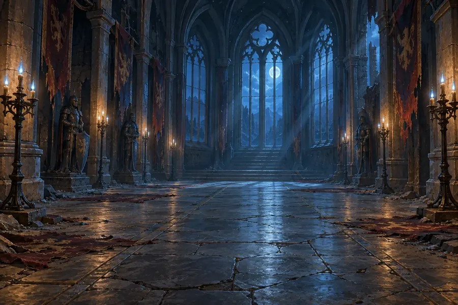
Отдельная карта со своими правилами: здесь правит Владыка замка, а в доспехах бродят духи других игроков.
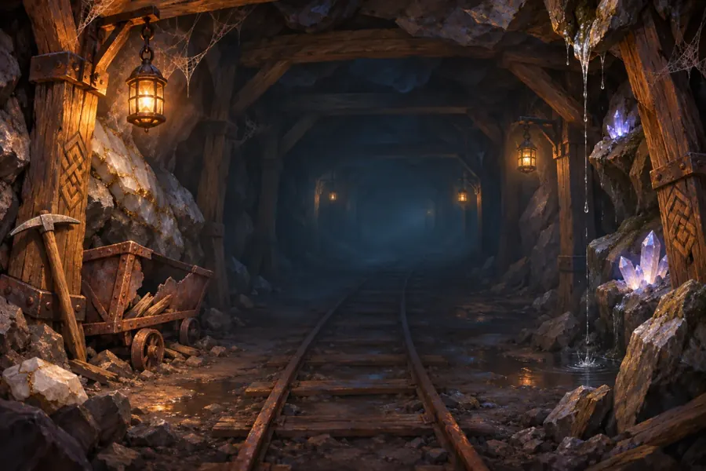
Бесконечные этажи: каменные стражи, самоцветы и скорпионы десяти цветов — самые сильные существа игры. Рекорд глубины сохраняется.
Почини бригантину на берегу — и она отвезёт тебя к причалу на дальнем острове, где ждёт пиратский сундук.
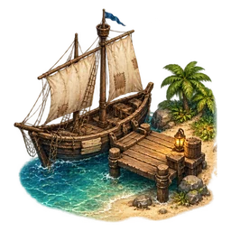
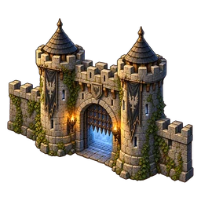
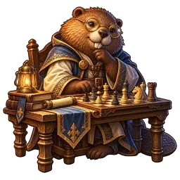
У хранителя маяка можно сыграть партию в шахматы с бобром. Выбирай один из 10 уровней сложности. Фигуры нарисованы в стиле игры.
Карта следит за вашими часами. Вечером в деревне загораются окна, а ночью на тропах появляются ночные гости. Небо меняется каждые несколько часов: дождь, снег, а изредка гроза, ливень или густой туман, и тогда бой идёт иначе. За северными снегами лежит тундра, за южными дюнами — каменистые пустоши, а реки можно перейти по мосту или вброд.
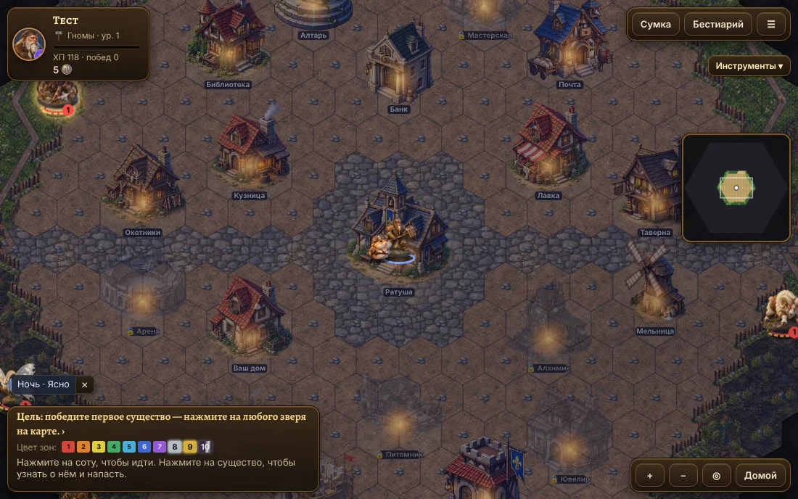
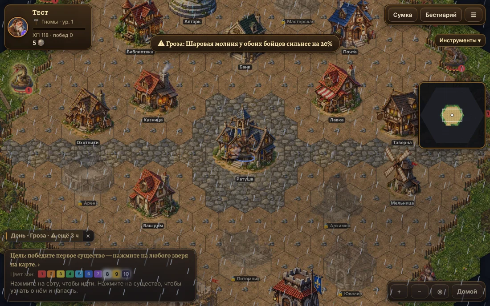
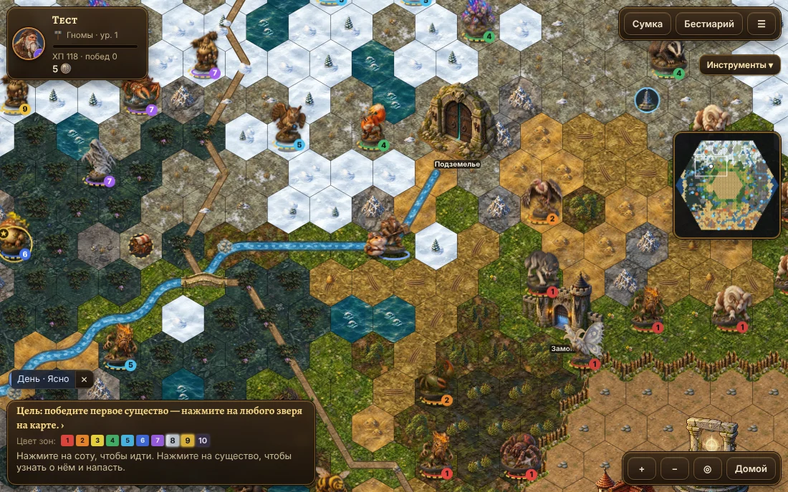
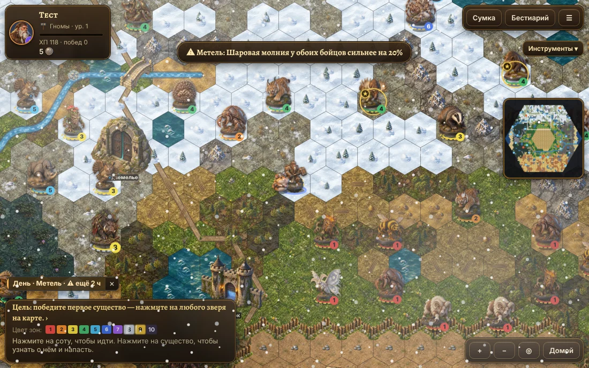
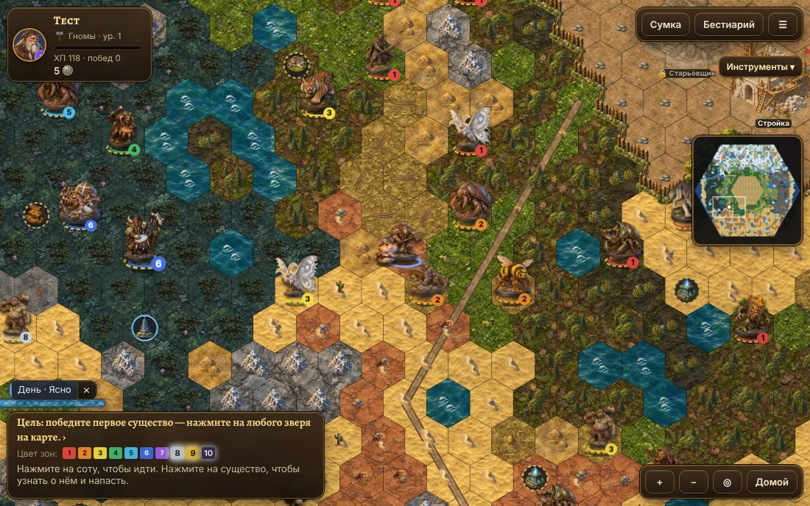
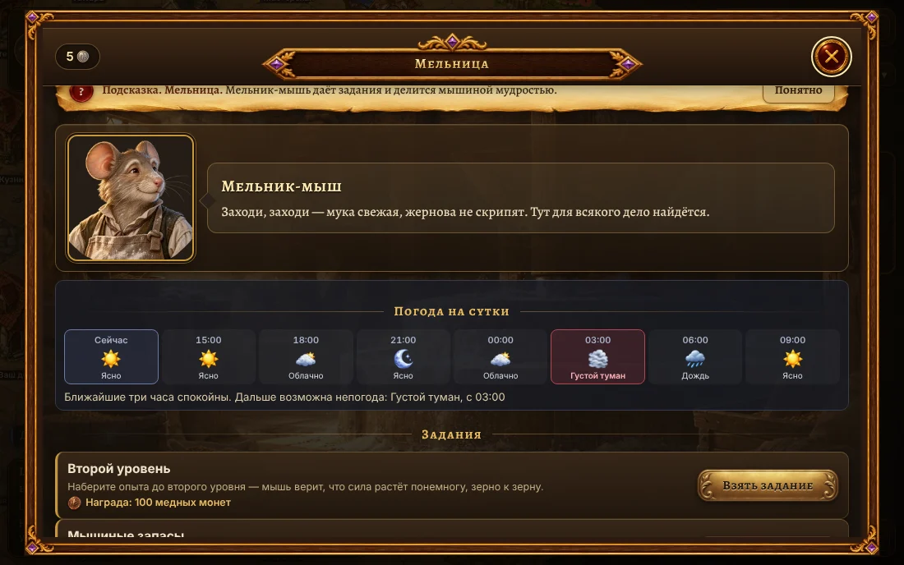
По умолчанию время суток и погода выключены — включи их в настройках игры (меню ☰ на карте), и мир оживёт.
Здания открываются по мере роста героя. В каждом живёт свой житель и своё занятие. Золото можно вложить в улучшения деревни, и они остаются навсегда. Кроме мастерских и лавок здесь есть Банк, Почта с коллекционными подарками, Ювелир, Охотничий дом, Алтарь воскрешения и Маяк с мини-играми.
Здесь хранится снаряжение: менять вещи можно только дома.
Покупка и продажа вещей, эликсиров, свитков и ресурсов. Вещи собраны по комплектам, есть примерка.
Улучшает цвет вещей и создаёт новые из ресурсов, что выпадают из существ. Вещи изнашиваются — их можно чинить.
Эликсиры, которые варятся из добычи с твоих охот.
Летопись осколков Великого Сердца, свитки и поручение дня.
Питомцы, яйца, занятия и угощения для верных спутников.
Гоблин-трактирщик даёт задания. Первое — «Первая кровь».
Мельник-мышь даёт задания и делится мышиной мудростью.
Журавль продаёт руны и вставляет их в вещи: по два гнезда в каждой.
Скупает ненужные вещи разом: дешевле Лавки, зато не глядя.
Выставляй вещи и ресурсы на продажу — покупатели находятся со временем.
Тени — копии героев других народов: побеждай, поднимайся в рангах и получай титулы. А Испытание дня — одно поле и один противник на всех.
Вклад приносит процент за серию заходов. Вклад ограничен потолком, который растёт вместе с героем.
Огранка самоцветов, добытых у стражей и скорпионов подземелья.
Поручения смотрителя, мини-игры и лавка жетонов. Из наград — украшения визитки героя.
Лесенки медалей за победы над каждым видом, «Ближайшие медали» и любимые значки рядом с именем героя.
У каждого здания свой хозяин: добрые, ворчливые и немного загадочные.
Питомец воюет рядом с героем: на отдельном поле против копии врага, под управлением своего ИИ, который умнеет с опытом. А в любой момент можно взять управление на себя. Дома питомцы учатся в питомнике и лакомятся угощениями. У питомца есть настроение: победы бодрят его, поражения огорчают, и после победы он говорит своё слово в журнале боя.
Яйца падают с редких боссов дальних земель.
У каждого уголка карты есть свой хозяин. Они сильнее обычных существ, и победа над ними запоминается.
Твой герой и десять хозяев карты стоят на подставках, словно миниатюры для настольной игры: от крысиного короля до призрачного. У каждого народа есть и герой, и героиня.
От крыс у деревенских стен до драконов на краю карты. Каждое сражается по-своему и оставляет добычу для кузницы и алхимика. Скорпионы подземелья — самые сильные существа игры: победить их можно только с 80-го уровня.
Сила героя, вещей, существ и ресурсов измеряется цветом: от красного до обсидианового. На каждый цвет — десять уровней. Чем выше цвет, тем опаснее путь и ценнее награда. Серебряный, золотой и обсидиановый цвета искрятся: их не спутать с жёлтым.
Собирай комплекты одежды и снаряжения — Корона, Руна, Роща, Чешуя и другие. Надевай предметы одного набора, чтобы получить дополнительные бонусы.
Вставляй руны в снаряжение: в каждой вещи по два гнезда.
Вещи изнашиваются. Береги их и чини в кузнице.
Двадцать четыре вида добычи: кость, руда, шёлк, чешуя, мёд, селенит, малахит и другие. Из них куются вещи и варятся эликсиры, и каждый ресурс где-то нужен.
Все составляющие каждого комплекта — с настоящими изображениями предметов из игры. На компьютере предметы расположены в одну строку; на телефоне их можно пролистывать по горизонтали.
Эликсир жизни и Эликсир силы, три свитка, Настой стойкости, Зелье грозы и Каменная кожа бывают всех десяти цветов, и чем выше цвет, тем сильнее эффект. Цвет виден по рамке значка. Предметы разных цветов лежат отдельными стопками, а в списках идут по цвету. Свиток спешки и Каменная пыль без цвета: их эффект не измерить числом.
Эликсир жизни лечит от 30 ХП на красном цвете до 350 на обсидиановом.
Из добычи куются вещи и варятся эликсиры, а руны вставляются в снаряжение и дают постоянные бонусы.
Версии 2.4–2.5 изменили бой, подземелье и медали, добавили звук, «Задания дня», цветные эликсиры и новых соперников.
Эликсир жизни и Эликсир силы заменили зелье и настой, а свитки и настои получили десять цветов с растущей силой и цветной рамкой.
Ядовитый укус даёт до трёх слоёв, и у каждого слоя свои три хода.
У каждого существа уровень от 1 до 100, он виден на карте и в бою. Цветная точка подсказывает, по силам ли оно. Вожаки сильнее обычных существ и дают лучшую добычу.
Рекорд глубины, подсказка о страже этажа и контрольные этажи: поражение глубже отнимает только найденные ниже монеты. Скорпионы десяти цветов дают камни и медали.
У каждого вида десять ступеней медали, цвет кружка растёт с победами. Визитка героя показывает фигуру в доспехах и все медали, а коллекционные подарки приходят на почту.
Перед приёмом существа — подпись «готовит…», каждый вид эликсира и свитка один раз за ход, причина поражения и совет в конце. В меню есть быстрый режим боя.
Единый показатель силы игрока для арены: подбор соперников ровной силы. Кнопка «По силам» на карте подсказывает подходящую цель.
Новые характеристики вещей, эликсиров и свитков. Пиявки и упыри лечатся, а Алхимик варит эликсир регенерации.
Двадцать четыре ресурса, и каждый нужен кузнице. Рецепты пересчитаны, у каждого цвета свои враги и своя добыча.
После гибели герой минуту отдыхает у Алтаря или за символическую плату возвращается к месту боя.
Звуки боя играют хэнг, челеста и гонг, а молния звучит гулом электричества: у каждого события свой инструмент. Карта и бой стали заметно быстрее и экономнее для телефона.
Головоломка дня, Испытание дня и поручение библиотеки в одном окне. Кнопка на карте и в меню светится зелёной точкой, пока есть незакрытые задания.
Отметьте рецепт звёздочкой в Кузнице: существа с нужными ресурсами засветятся на карте.
Сначала камни, затем удар, затем реакция существа: звук линии, удар и цифра урона больше не сливаются. При повышении уровня видно, на сколько выросли ХП и Сила и что открылось.